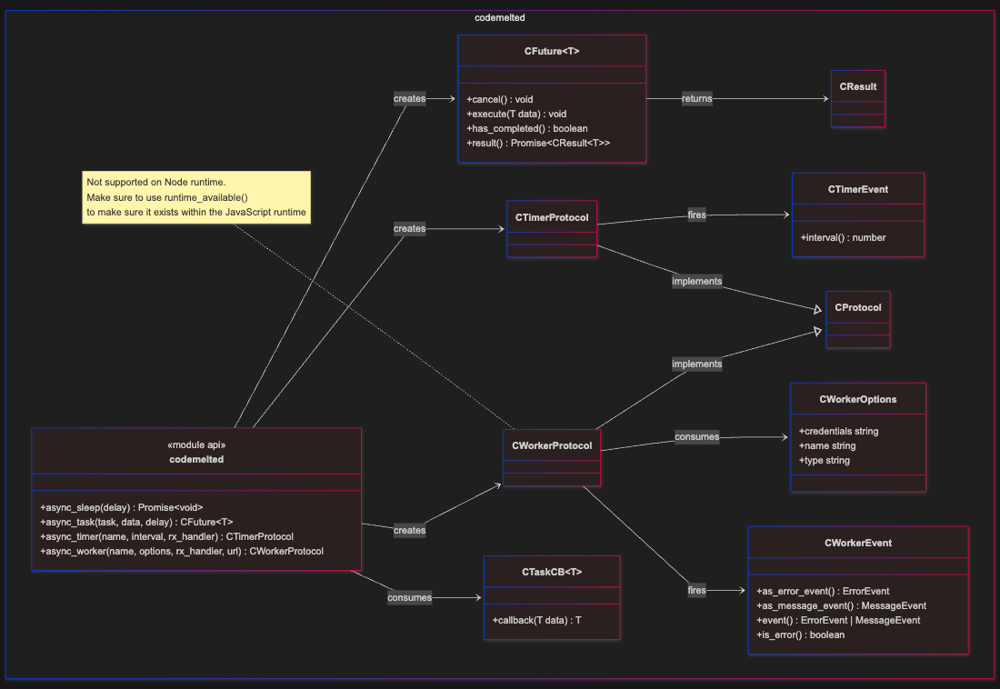

Project logo
Async Use Case
Brief introduction to the feature being requested. Could be from a Jira board, assigned problem report, customer request, or the start of a bigger project. This focuses mainly functionality of a singular request and may serve as a bigger piece of a whole.
Table of Contents
FUNCTIONAL ANALYSIS
UC-1: Function Feature
IF Describing via Behavioral Driven Development (BDD) User Story Format
Description: As a [who], I want [what], so that [why].Scenario 1: Describe the scenario
Given: Sets up the initial context, state, or preconditions of the system before any action happens.When: Describes the specific action, event, or trigger performed by the user or system.Then: Specifies the expected observable outcome or response after the action.And: Extends any of the previous statements to add positive or multiple conditions, actions, or results.But: Adds a negative condition, exception, or contrasting limitation to the preceding steps
Scenario 2: Describe the scenario
Given: Sets up the initial context, state, or preconditions of the system before any action happens.When: Describes the specific action, event, or trigger performed by the user or system.Then: Specifies the expected observable outcome or response after the action.And: Extends any of the previous statements to add positive or multiple conditions, actions, or results.But: Adds a negative condition, exception, or contrasting limitation to the preceding steps
IF Describing via Use Case Scenario Format:
Description: A description of what this use case is all about.Actors: Who / what is triggering this use case.Trigger: The ideal setup necessary for the use case scenario to run.Main Success Scenario: The primary, ideal sequence of steps where everything goes right and the user achieves their goal without errorsAlternate Flows: Different paths or optional behaviors that still lead to success (e.g., a customer pays with PayPal instead of a credit card)Exception Flows: Paths handling errors, invalid inputs, or system failures (e.g., a declined credit card or an out-of-stock item)Post-Condition: The expectation when the main success scenario completes.
IF Describing via EARS Function Requirements Format:
Ubiquitous (Always Active): The shall (e.g., The mobile phone shall have a mass of less than 150 grams
State-Driven (Active During a State): While , the shall (e.g., While the vehicle is in reverse, the system shall display the rear camera feed)
Event-Driven (Triggered by an Event): When , the shall (e.g., When the user presses the power button, the device shall turn on)
Optional Features: Where , the shall (e.g., Where the navigation package is installed, the system shall display the map)
Unwanted Behavior: If , then the shall (e.g., If the password is entered incorrectly three times, then the system shall lock the account)
NOTES
Class Diagram
